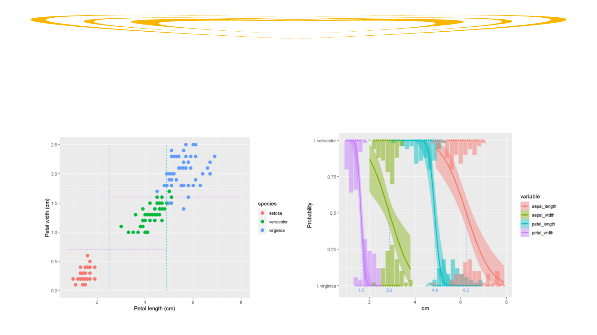

Introduction
• Question:HowcanbotanistsidentifythreespeciesofIris inthefieldbasedon
measurements?
Iris virginica
Iris versicolour
Iris setosa

Dataset
Fisher,R.A.(1936).Theuseofmultiplemeasurementsintaxonomicproblems.Annals of eugenics,7(2),179-188v
• Fisher(1936)collectedthedatainthefieldtohighlightproblemsofidentifyingspecies.
• 50observationsforeachspeciesofsepalwidth,sepallength,petalwidth,andpetallength.
• SepalmorphologyisunusualinIris, being largerandmoreornatethaninnerpetalswhichitusually
protects.
Cleaning
• Outlier/errorwithameasurementof540cmforasepallength(Iris giganticaerulea is30cmlong)andtwomissing
valuesforsepalwidthandpetallengthwithinI. setosa.
• Errorandmissingvalues(MCAR)wereimputedbasedonthemeanofsharedvaluesthatwerepresent.
Exploratory Data Analysis
• BoxplotsshowI. setosa delineatingbasedonpetallengthandpetalwidth.DifficulttodiscernI. virginica andI.
versicolor duetooverlapofmeasurementsoutsideofquartileranges.

Models
• Clusteranalysisshowsifpetallengthislessthan2.5cmor/andpetalwidthislessthan0.7cm,thenspeciesisI.
setosa.Theintersectionof I. versicolor andI. virginicaforasmallnumberofobservationscannotbefully
differentiated.
• ThebinaryproblemofidentifyingI. versicolor orI. virginica triedtobesolvedusinglogisticregression.Petallength
andpetalwidthhavethesharpestdelineationcomparedtothegradualoverlapsofsepalmeasurementswithpetal
widthhavinglesserror.Numbersroundedtoonedecimalplace.
Results
Derivedplantkeyfromclusteranalysisandlogisticregression:
• Ifpetallengthislessthan2.5cm:I. setosa
• Ifpetalwidthisgreaterthan1.6cmandpetallengthisgreaterthan4.9cm:I. versicolor
• Ifpetalwidthislessthan1.6cmandpetallengthislessthan4.9cm:I. virginica
Usingthiskey:identifiesall50I. setosa;only43I. virginica correctlybutwithoneadditionalI. versicolor; andonly
identifies43I. versicolor. 13plantswouldbeunidentifiablebymorphologyalonewithoneerror.Decisiontrees
methodsnaturallylendtoplantclassificationbutallplantsarecategorizedincreasingtheerroranddifferentpetal
measurementsaresuggestedbasedondifferentalgorithms.
Conclusion
• Using“lessthanandequalto”increasestheerrorandtheprecisionofexactlymeasuring16mmwouldbedifficult
inthefieldandnotstandardizedacrossbotanists. Identifyingasmallernumbercorrectlymaybemorebeneficial(I.
versicolor formedicine)thanidentifyingallwithsmallerrors.
• Attemptstoclassifyallplantsbasedonmorphology,wherepossiblehybridization(Anderson,1936)isoccurring,
willleadtomisclassification.
• Usingdecisiontreescanleadtodifferentresultsanddimensioncriteria(cm)happeningwithina“blackbox”which
maybedifficulttoexplain.
• Explainingtootherbotanistsortaxonomistsmaybeeasierusingsimplermethodsandacceptingthatplantsare
difficult(impossible)toidentifybymorphologyalone.
Anderson,E.(1936).ThespeciesprobleminIris.Annals of the Missouri Botanical Garden,23(3),457-509.